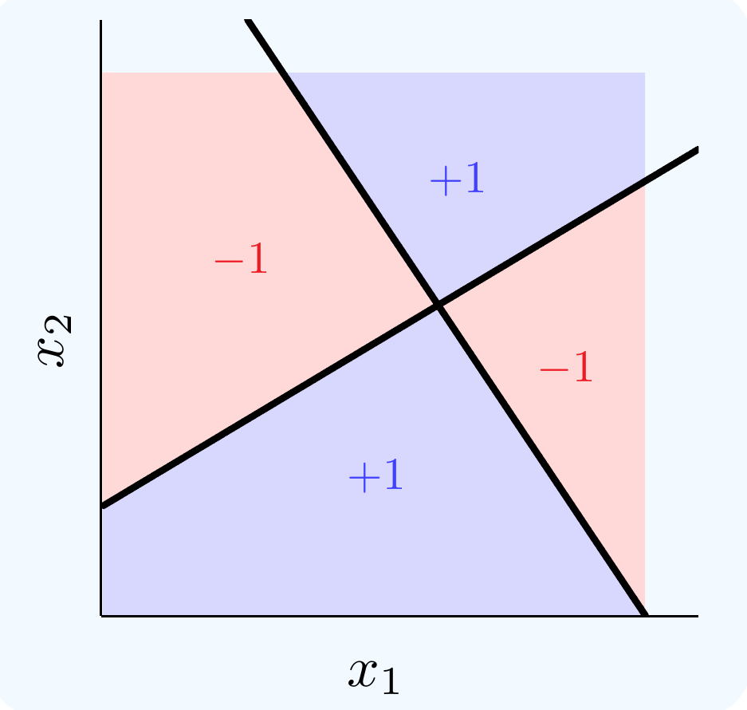
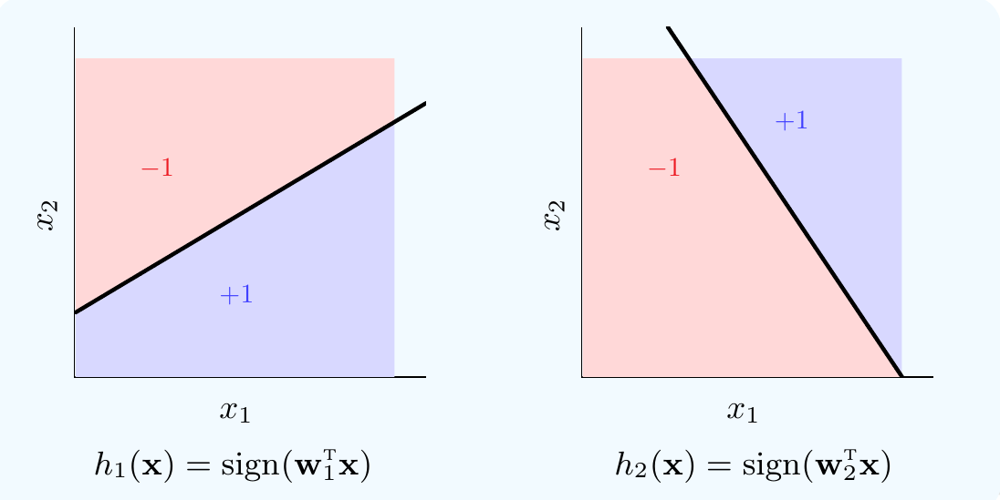
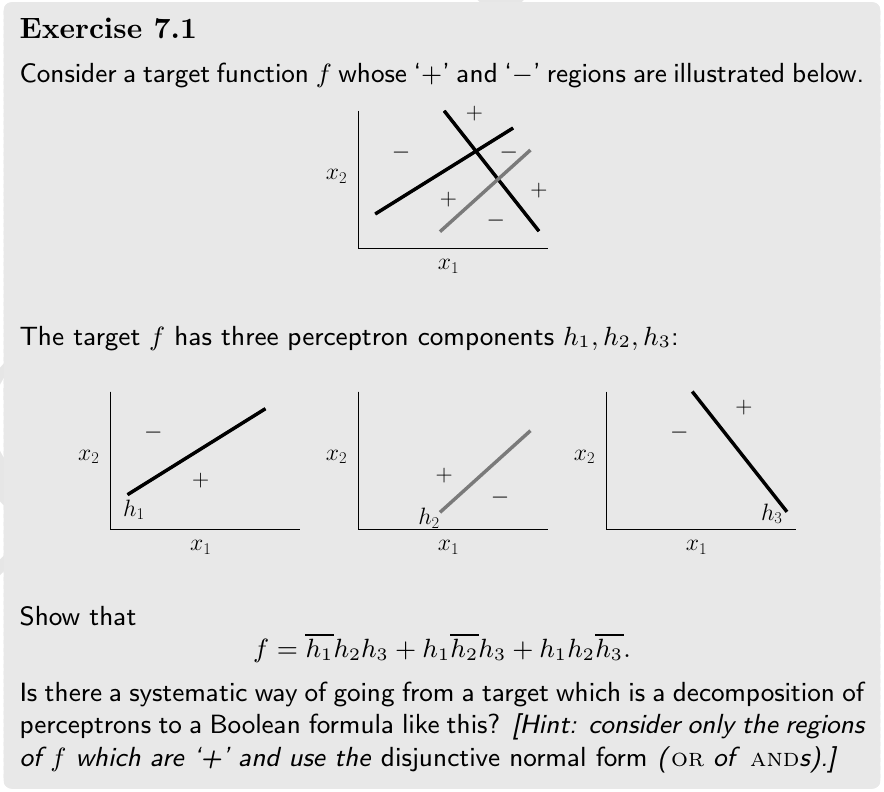
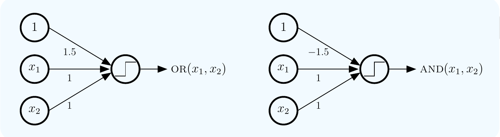
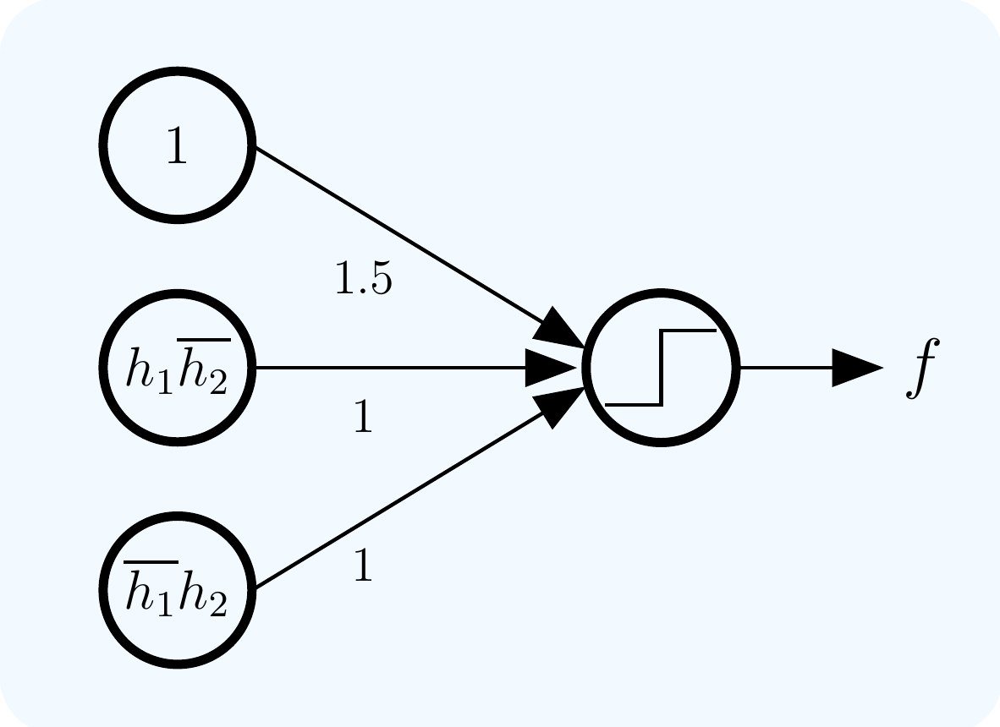
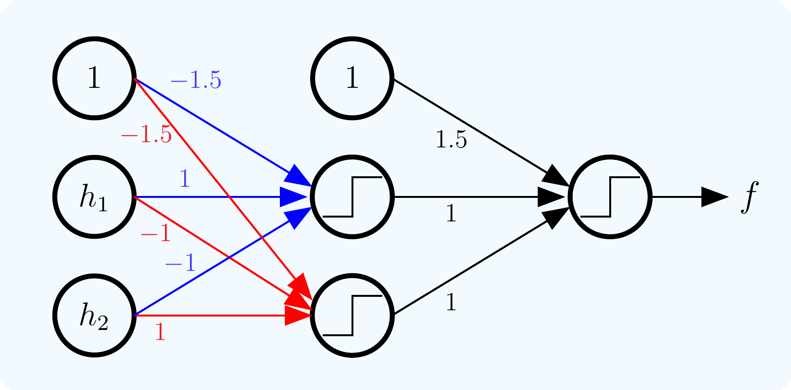
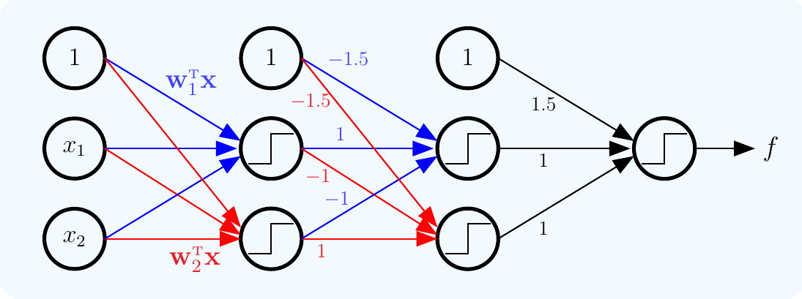

layout: true <div class="my-header"> <p class="align_left"><img src="images/yonsei_logo.png" style="height: 30px;"/></p> <p class="align_right"><b>LFD Chapter 7 - Part 1</b></p> </div> <div class="my-footer"> <p class="align_right"><b>2022.03.13 @ SYTEARK</b></p> <p class="align_left"><b>Tae Geun Kim</b></p> </div> --- class: center, middle # The Multi-layer Perceptron <h4 style="color:brown">LFD Chapter 7 - Part 1</h4> <h3 style="color: darkblue">Tae Geun Kim</h3> --- ## Table of Contents -- * Graph representation of Boolean operations -- * Softening -- * Hands on with MLP --- class: center, middle # Graph representation of Boolean operations --- class: split-50 ### The XOR Problem .left-column[ .center[ <div id="boxshadow" style="width:95%;margin:0 auto;">  <figcaption style="text-align:center";><b>Fig.1</b> The XOR Problem</figcaption> </div> ] ] -- .right-column[ * This problem can't be solved by a single layer MLP. ] -- .right-column[ * However $f$ is composed of two linear parts. ] -- .right-column[ * Can we decompose $f$ into two simple perceptrons? ] --- ### The XOR Problems .center[ <div id="boxshadow" style="width:60%;margin:0 auto;">  <figcaption style="text-align:center";><b>Fig.2</b> Decompose XOR to two perceptrons</figcaption> </div> ] -- * The target $f$ equals $+1$ when exactly one of $h_1,\,h_2$ equals $+1$. -- * This is the Boolean $\text{XOR}$ function : $f=\text{XOR}(h_1,\,h_2)$. -- * We can rewrite $f$ using more simple notations. --- ### Boolean Operations * $\text{OR}$ operation $$ \text{OR}(h\_1,\, h\_2) = \begin{cases} 1 & \text{if $h\_1=1$ or $h\_2=1$} \\\\ -1 & \text{otherwise} \end{cases} $$ -- * $\text{AND}$ operation $$ \text{AND}(h\_1,\, h\_2) = \begin{cases} 1 & \text{if $h\_1=1$ and $h\_2=1$} \\\\ -1 & \text{otherwise} \end{cases} $$ -- * $\text{NEG}$ operation $$ \text{NEG}(h) = \begin{cases} 1 & \text{if $h=-1$} \\\\ -1 & \text{otherwise} \end{cases} $$ -- * Standard Boolean notation $$ a \times b = \text{AND}(a,b),\,~a + b = \text{OR}(a,b),\,~\overline{a} = \text{NEG}(a) $$ --- class: split-30 ### The XOR Problem Now, we can rewrite the target $f$ using standard Boolean notation. .left-column[ .center[ ] ] .right-column[ .center[ ] ] -- .center[ $$ f = h\_1 \overline{h\_2} + \overline{h\_1} h\_2 $$ ] --- .center[  ] --- ### Boolean to Perceptron * $\text{OR},\,\text{AND}$ can be implemented by the perceptron $$ \begin{aligned} \text{OR}(x\_1,\,x\_2) &= \text{sign}(x\_1 + x\_2 + 1.5) \\\\ \text{AND}(x\_1,\,x\_2) &= \text{sign}(x\_1 + x\_2 - 1.5) \end{aligned} $$ -- * This implies that these more complicated targets are ultimately just combinations of perceptrons. -- * Then we can rewrite $\text{XOR}$ as perceptron $$ \begin{aligned} f &= h\_1 \overline{h\_2} + \overline{h\_1} h\_2 \\\\ &= \text{sign}(h\_1 \overline{h\_2} + \overline{h\_1} h\_2 + 1.5) \\\\ &= \text{sign}(\text{sign}(h\_1 - h\_2 - 1.5) - \text{sign}(h\_1 - h\_2 + 1.5) + 1.5) \end{aligned} $$ -- * But this form is not very intuitive. --- ### Graph Representation of Perceptron * Let's introduce a graph representation of perceptrons, starting with $\small \text{OR}$ and $\small \text{AND}$. -- .center[ <div id="boxshadow" style="width:100%;margin:0 auto;">  <figcaption style="text-align:center";><b>Fig.3</b> Graph representation of $\small\text{OR}$ and $\small\text{AND}$</figcaption> </div> ] -- **Q.** Give graph representations of $\text{OR}(x_1,\,\cdots,\,x_M)$ & $\text{AND}(x_1,\,\cdots,\,x_M)$. --- ### Graph Representation of $\text{XOR}$ * Since $f = h\_1 \overline{h\_2} + \overline{h\_1} h\_2$, which is an $\text{OR}$ of the two inputs $h\_1\overline{h\_2}$ and $\overline{h\_1}h\_2$, -- .center[ <div id="boxshadow" style="width:60%;margin:0 auto;">  <figcaption style="text-align:center";><b>Fig.4</b> Graph representation of $\small\text{XOR}$ part 1.</figcaption> </div> ] --- ### Graph Representation of $\text{XOR}$ * Since the two inputs $h\_1\overline{h\_2}$ and $\overline{h\_1}h\_2$ are $\text{AND}$s, they can be simulated by the output of two $\text{AND}$ perceptrons. -- .center[ <div id="boxshadow" style="width:80%;margin:0 auto;">  <figcaption style="text-align:center";><b>Fig.5</b> Graph representation of $\small\text{XOR}$ part 2.</figcaption> </div> ] --- ### Graph Representation of $\text{XOR}$ * Finally, since $h\_1 = \text{sign}(\mathbf{w}_1^\mathsf{T}\mathbf{x})$ and $h\_2 = \text{sign}(\mathbf{w}_2^\mathsf{T}\mathbf{x})$, -- .center[ <div id="boxshadow" style="width:100%;margin:0 auto;">  <figcaption style="text-align:center";><b>Fig.6</b> Graph representation of $\small\text{XOR}$ part 3.</figcaption> </div> ]